Резьбовая вставка встаёт ровно с первого раза
Ручной установщик с предварительным сжатием. Вставка сжимается во втулке и входит в отверстие без усилия — перпендикулярно и соосно.
Один инструмент — один размер. Брак при установке практически исключён, особенно на мелких вставках.
Сначала сжать, потом вкрутить
Вилочным установщиком вставку закручивают в отверстие как есть. Мелкие вставки при этом идут с перекосом или повреждаются — это брак. Здесь вставка сначала сжимается в обжимной втулке, а широкий торец втулки держит инструмент перпендикулярно детали.
Без сжатия
Наружный диаметр вставки больше резьбы отверстия. Её вкручивают как есть — и мелкая вставка легко встаёт криво.
Со сжатием
Во втулке вставка сжимается и становится меньше резьбы отверстия. В деталь она входит без усилия и там разжимается.
Устройство
Корпус с продольным каналом и открытым гнездом, обжимная втулка в его торце и установочный шток с приводной рукояткой.
Обжимная втулка
Закреплена в торце корпуса. Внутри неё вставка сжимается, а широкий наружный торец прижимают к детали.
Гнездо
Открытый участок канала. Принимает вставку любой длины от 1,0D до 3,0D.
Корпус
С продольным каналом и накаткой. Размер вставки выгравирован на нём.
Шток с рукояткой
Прорезь на конце штока захватывает хвостовик вставки. Шток вынимается из корпуса.
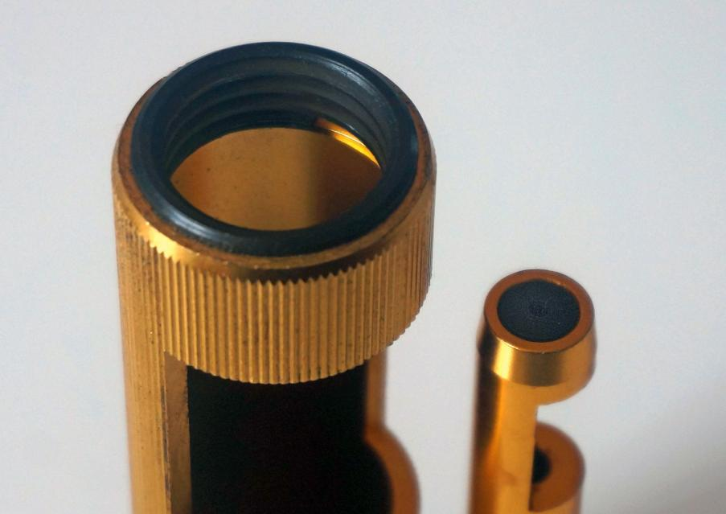
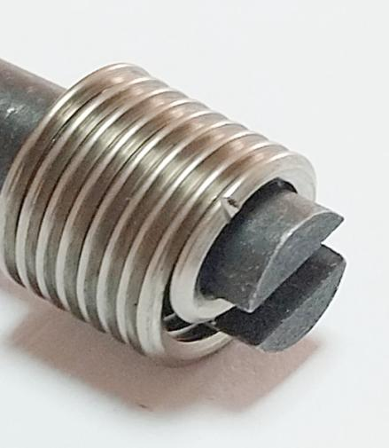
Восемь движений
Четыре — в руке, не касаясь детали. Ещё четыре — у детали. Чертёж показывает, что в это время происходит внутри инструмента.
В руке, не касаясь детали
-
1
Открыть гнездо
Отведите шток назад — гнездо откроется.
-
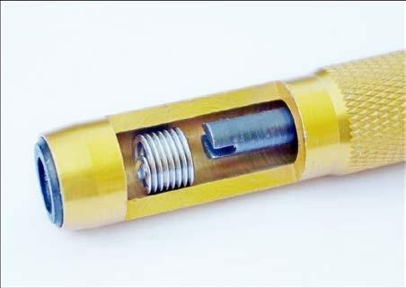
2
Вложить вставку
Положите вставку в гнездо хвостовиком к обжимной втулке.
-
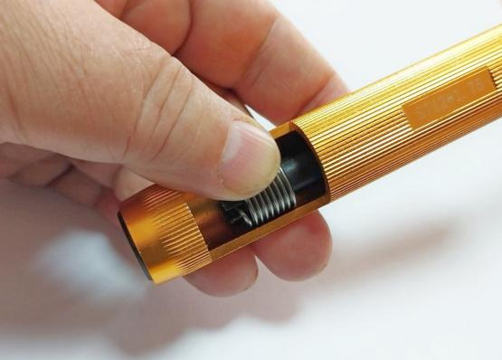
3
Захватить хвостовик
Подайте шток вперёд и поворачивайте, пока прорезь не захватит хвостовик. Вставку придержите пальцем.
-
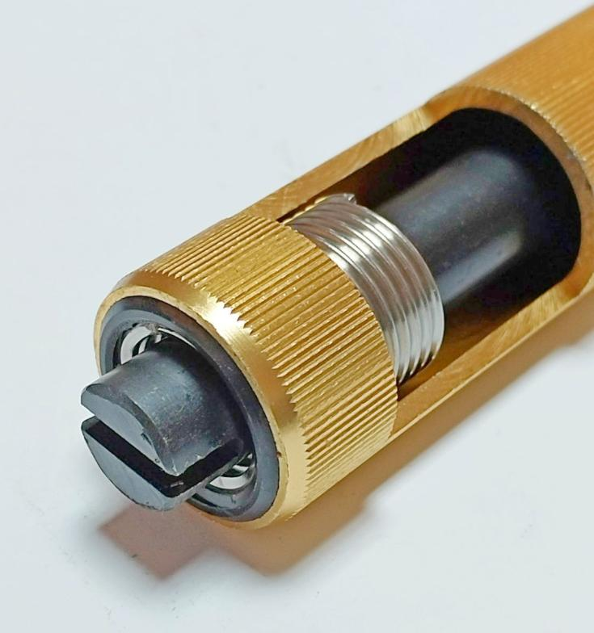
4
Сжать во втулке
Вращайте по часовой стрелке: вставка вкручивается во втулку и сжимается. Остановитесь, когда конец штока покажется снаружи.
У детали
-
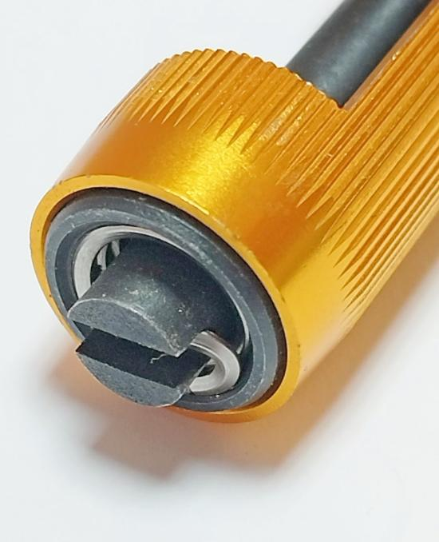
5
Найти отверстие
Вставьте конец штока в подготовленное резьбовое отверстие — он работает как центрирующий штифт.
-
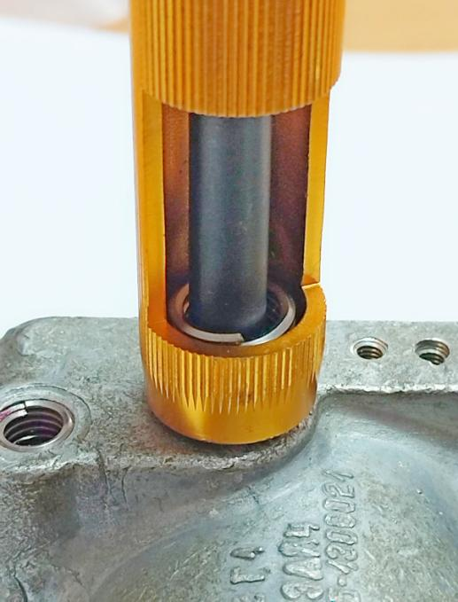
6
Прижать торец
Плотно прижмите торец втулки к детали — вставка встанет перпендикулярно и соосно отверстию.
-
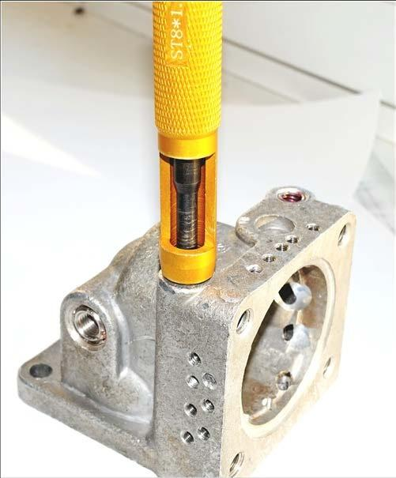
7
Вкрутить
Не ослабляя нажим, вращайте рукоятку — сжатая вставка легко входит в резьбу.
-
8
Готово
Инструмент отпустил деталь — вставка установлена. Проверьте пальцем: она чуть ниже поверхности.
Как понять, что готово
Пока вставка не вышла из втулки целиком, инструмент и деталь связаны через неё. Связь пропала — вставка на месте. Проверьте пальцем: она должна быть чуть ниже поверхности. Если нет — доверните штоком.
Проверка пальцем
Верх вставки — чуть ниже поверхности детали. Выступает — доверните штоком.
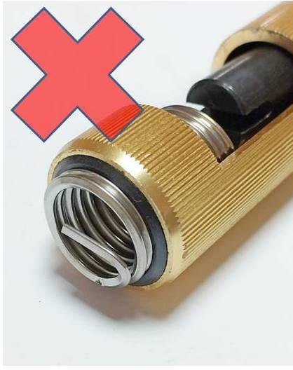
Перекрутили — не страшно
Вставка, вышедшая из втулки наружу, мешает. Прогоните её через втулку и используйте снова.
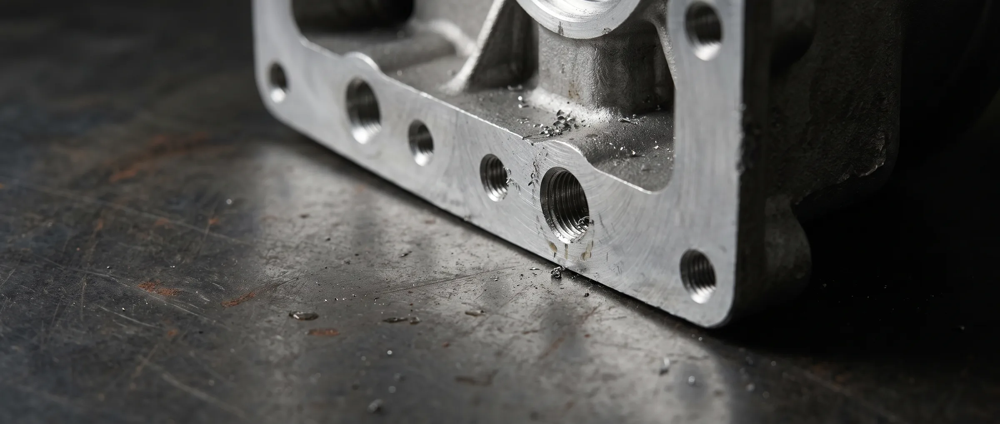
Коротко об установщике
1,0–3,0D
длина вставок, которые принимает гнездо
90°
торец втулки держит вставку перпендикулярно детали
2 в 1
шток вынимается и работает как установщик-вилка
1размер
на один установщик — размер выгравирован на корпусе
Совет из цеха
Для мелких и лёгких деталей зажмите установщик в тисках и подносите деталь к инструменту. Одна рука держит деталь, другая вращает рукоятку.
Деталь не нужно закреплять и откреплять — производительность заметно растёт. Мы проверили этот способ на вставках M8.
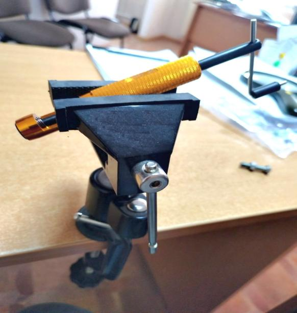
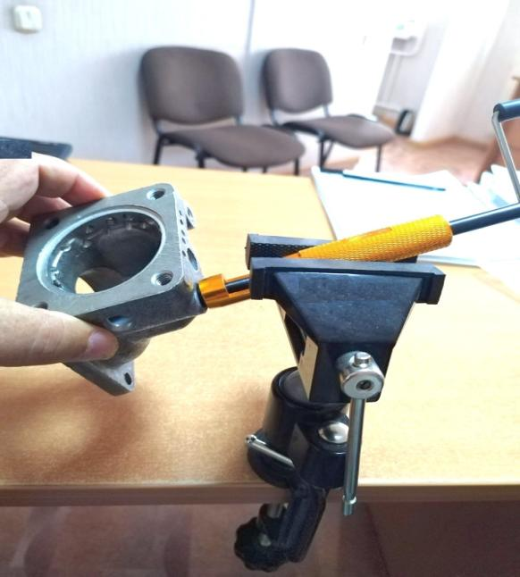
Два в одном
Шток вынимается из корпуса и работает как обычный установщик типа «вилка» — без предварительного сжатия. Для мест, куда корпус не подходит.
Установщик со сжатием
Честный минус
Установщик крупнее простых вилочных и винтовых, поэтому подходит не везде. Ради этого шток и сделан съёмным.
Размеры
Один установщик — один размер вставки. Размер выгравирован на корпусе, например ST5×0,8 или ST12×1,75. Напишите, какие резьбы у вас в работе, — подберём.
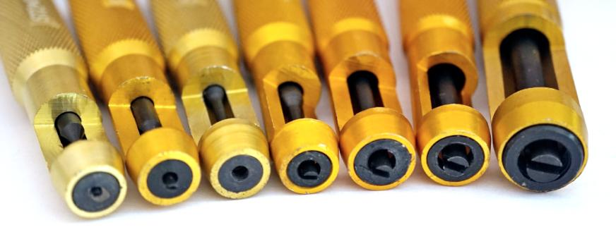
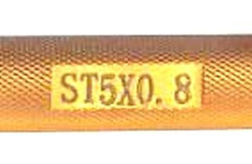
Подобрать установщик
Напишите размеры резьбы и сколько инструментов нужно. Ответим и подберём установщик под ваши вставки.
- Адрес
- 220037, Минск, ул. Передовая, 15, пом. 11